Brasa · primera pasada GENERADO / EN_CORRECCION — NO INTEGRAR. Animación de atlas diagnóstica a 95ms; no sustituye el timing del juego. Capturas reales antes/después a igual escala. Los cuadros finales vacíos son disipación intencional.
brasa_mount · burst 12 fases nativas
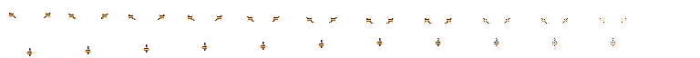
brasa_mount · nova 12 fases nativas
brasa_purge · cone 12 fases nativas
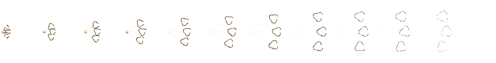
brasa_dismantle · burst 12 fases nativas
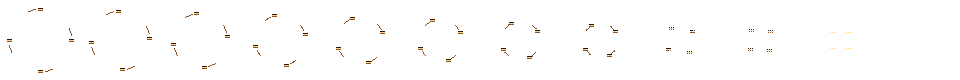
brasa_dismantle · aura 12 fases nativas
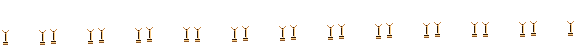
brasa_vent · zone 12 fases nativas
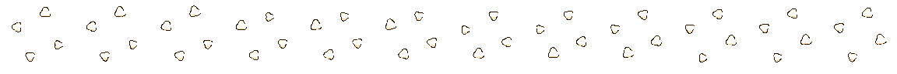
mobile · acción 0 (4 = purga con maestría)
before · 256ms 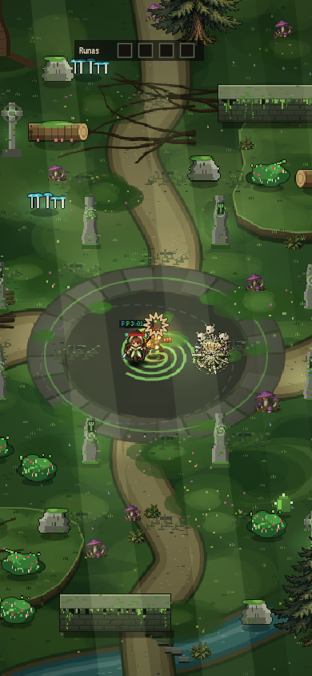
after · 256ms 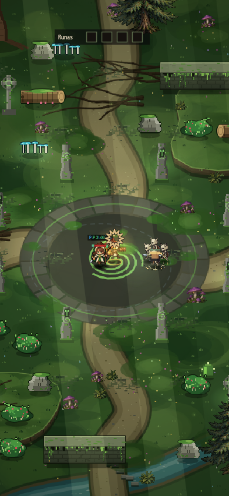
mobile · acción 1 (4 = purga con maestría)
before · 256ms after · 256ms 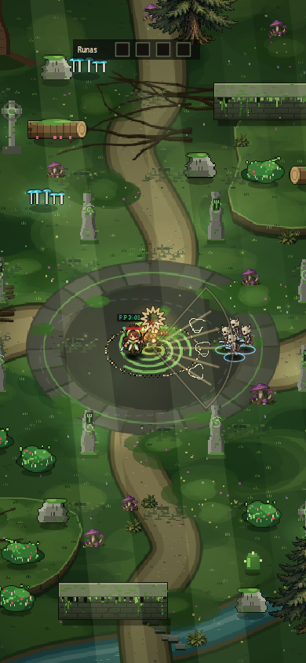
mobile · acción 2 (4 = purga con maestría)
before · 256ms 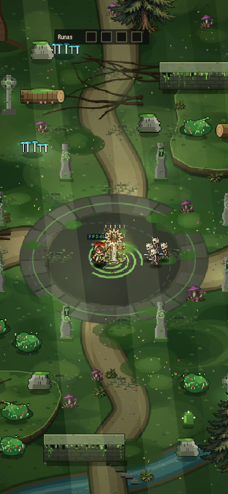
after · 256ms mobile · acción 3 (4 = purga con maestría)
before · 256ms 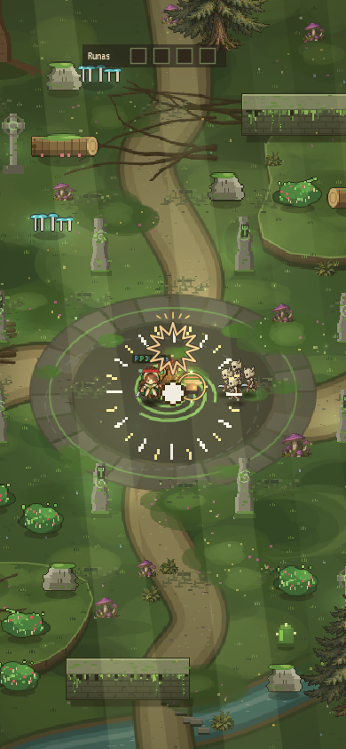
after · 256ms mobile · acción 4 (4 = purga con maestría)
before · 256ms 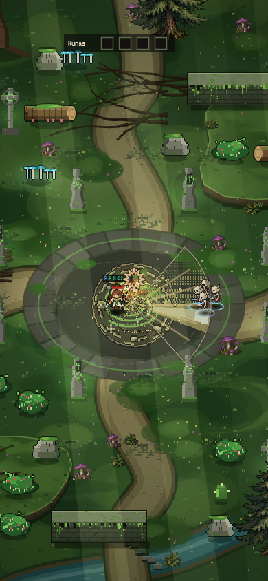
after · 256ms 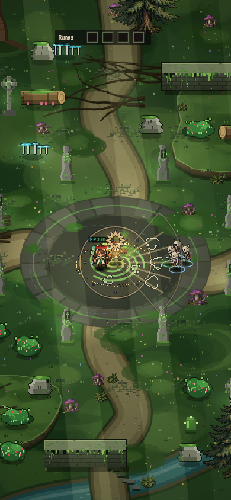
horizontal · acción 0 (4 = purga con maestría)
before · 256ms after · 256ms 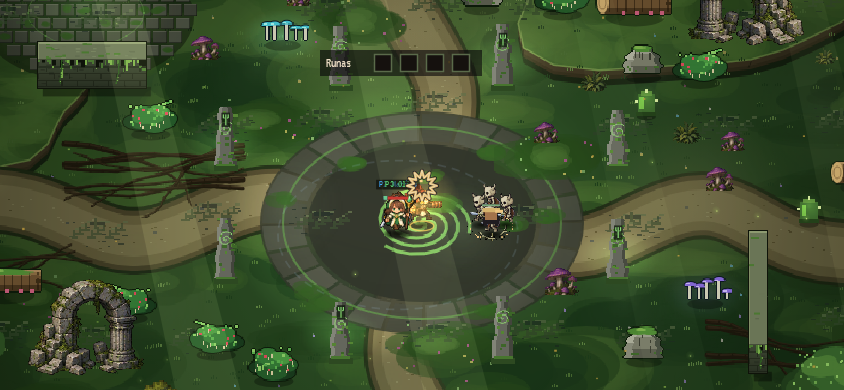
horizontal · acción 1 (4 = purga con maestría)
before · 256ms 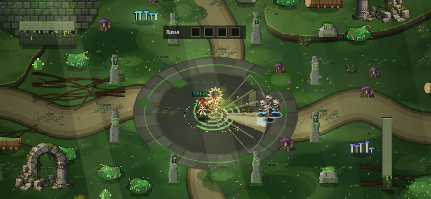
after · 256ms 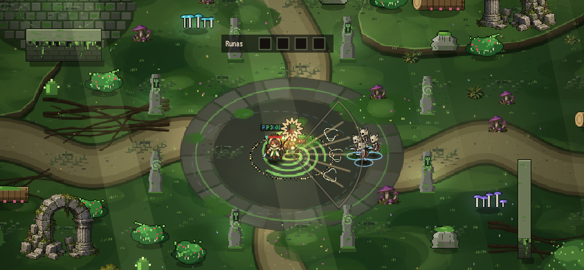
horizontal · acción 2 (4 = purga con maestría)
before · 256ms after · 256ms 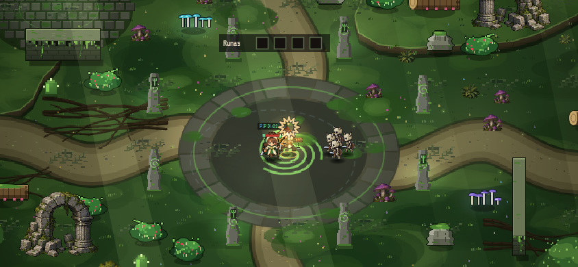
horizontal · acción 3 (4 = purga con maestría)
before · 256ms 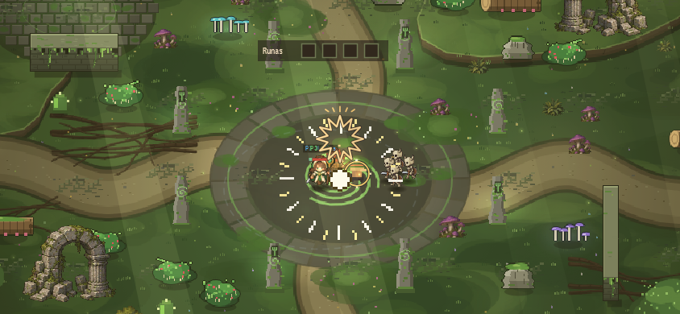
after · 256ms horizontal · acción 4 (4 = purga con maestría)
before · 256ms 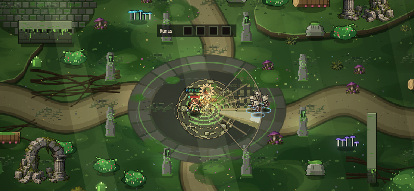
after · 256ms 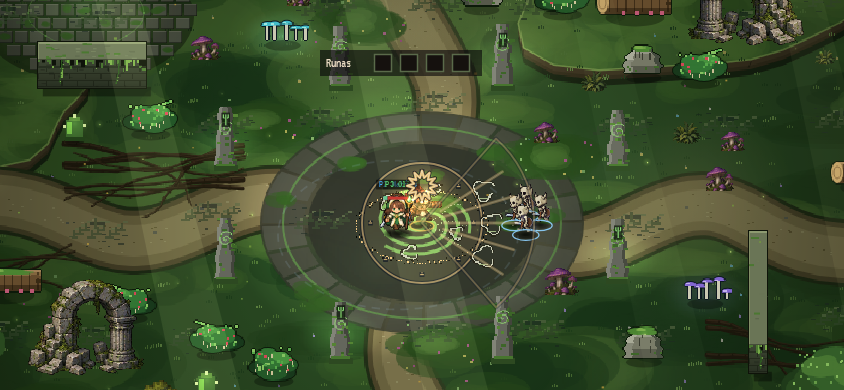